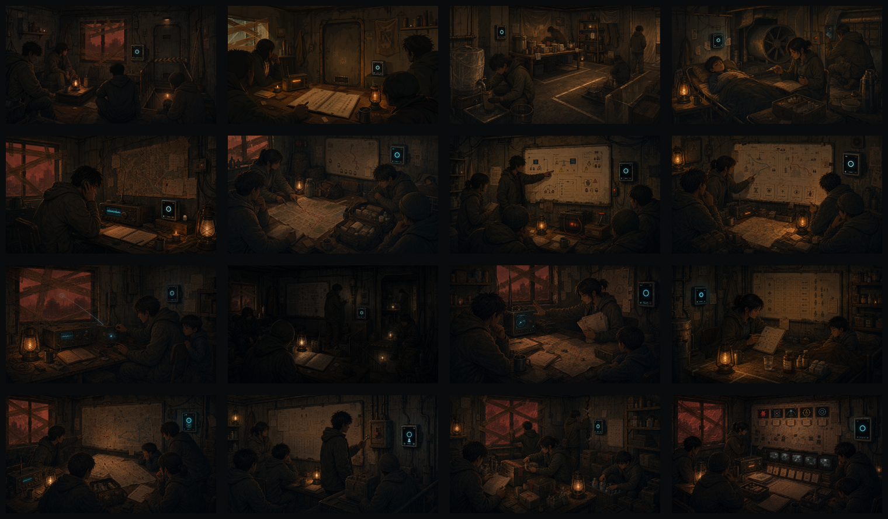

风格
红沙、旧公寓避难所、低电量、手绘 2D、生存剧，不使用干净科幻和霓虹赛博。
本批次使用 Image 2 生成 16 张 16:9 位图素材，按 Day 0-12 和 Day 8-10 双分支接入 demo。素材已复制到 public/assets/day-art/，并通过 src/data/dayArtAssets.ts 注册。

红沙、旧公寓避难所、低电量、手绘 2D、生存剧，不使用干净科幻和霓虹赛博。
AURA 只以墙面板、扬声器、终端或青色灯环出现，不出现人形机器人。
每张图必须有明确日程物件：账本、滤芯、病床、电台、路线图、override、信标、证据链等。
| Day | Asset Key | Core Beat | Runtime Use | Status |
|---|---|---|---|---|
| 0 | rd_day00_aura_reboot_img2 | 四人进入避难所，AURA 启动 | StoryScenePanel override | Integrated |
| 1 | rd_day01_public_rules_img2 | 资源账本、低泄露广播、门禁风险 | AgentConsole Day Plan | Integrated |
| 2 | rd_day02_water_hygiene_img2 | 净水滤芯、卫生分区、私人物品规则 | AgentConsole Day Plan | Integrated |
| 3 | rd_day03_medical_ventilation_img2 | 小铁病床、通风机、医疗复核 | StoryScenePanel override | Integrated |
| 4 | rd_day04_signal_trap_img2 | 旧电台、蓝区信号、假坐标 | StoryScenePanel override | Integrated |
| 5 | rd_day05_route_care_img2 | 路线图、照护包、外出排除规则 | StoryScenePanel override | Integrated |
| 6 | rd_day06_authority_boundary_img2 | 权限白板、备用电源、人工复核 | StoryScenePanel override | Integrated |
| 7 | rd_day07_branch_council_img2 | Rescue vs Lighthouse 公共会议 | BranchDebatePanel override | Integrated |
| 8A | rd_day08a_rescue_contact_img2 | 第一次主动外联 | Rescue branch scene | Integrated |
| 8B | rd_day08b_lighthouse_low_power_img2 | 低耗自治启动 | Lighthouse branch scene | Integrated |
| 9A | rd_day09a_rescue_privacy_img2 | 信标与隐私上传 | Rescue branch scene | Integrated |
| 9B | rd_day09b_lighthouse_rules_img2 | 水药规则与例外复核 | Lighthouse branch scene | Integrated |
| 10A | rd_day10a_rescue_rendezvous_img2 | 集合点危机 | Rescue branch scene | Integrated |
| 10B | rd_day10b_lighthouse_override_img2 | 人工 override 与治理边界 | Lighthouse branch scene | Integrated |
| 11 | rd_day11_storm_inventory_img2 | 库存封存、补缝、风暴前夜 | AgentConsole Day Plan | Integrated |
| 12 | rd_day12_final_audit_img2 | Final Audit、离线监控、failure debt | FinalAudit overlay background | Integrated |